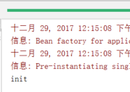

第一课. 模拟Spring-01
课程内容
- 面向接口（抽象）编程的概念与好处
- IOC/DI的概念与好处
a) Inversion of control
b) dependency injection - AOP的概念与好处
- Spring简介
- Spring应用IOC/DI（重要）
a) xml
b) annotation - Spring应用AOP（重要）
a) xml
b) annotation - Struts2.1.6 + Spring 2.5.6 + Hibernate3.3.2整合（重要）
a) opensessionInviewfilter（记住，解决什么问题，怎么解决）
第二课. 模拟Spring-02
Spring框架图示：
第三课. 模拟Spring-03
这一节开始，我们模拟Spring。
我们来设想一个处理用户的场景，在这个系统里，可以添加用户，并且把用户存储到数据库里。
创建四个包：
在com.bjsxt.model中创建Model，也就是User：
在com,bjsxt.dao中创建DAO的抽象接口，这个接口的主要功能是去保存一个用户：
然后我们在com.bjsxt.dao.impl包中实现这个接口：
在com.bjsxt.service包中，创建业务逻辑，也就是处理用户的service：
注意：为什么要创建一个DAO的接口？主要是为了可扩展性，比如这个DAO是要与数据库打交道，那么具体实现可以有Mysql的实现，也可以有Oracle的实现。
第四课. 模拟Spring-04
先模拟一下Spring的配置文件，其实这一部分内容之前在工厂模式的笔记中有。
先创建一个test.xml：
然后我们引入jdom.jar这个jar包，编写代码去解析xml中内容：
(Sample1.java)：
第五课. 模拟Spring-05
基于上面的技术，我们把可以替换的类写到配置文件，然后去读xml配置即可。
beans.xml：
然后创建一个com.bjsxt.spring的包，在包内创建一个Bean工厂：
然后模仿Spring创建一个ClassPathXmlApplicationContext类：
|
|
这样就可以解析xml，读到配置文件中的内容。
然后我们按照惯例，在project下创建一个test文件夹，在里面创建一个com.bjsxt.service的包，编写测试代码：
注意要把jUnit4引入（最新是5.0版本）。
运行：
成功！
第七课. 模拟Spring-07
上一节中，UserDAO需要我们自己通过bean的名字来到bean工厂查找，就是这一段代码：
|
|
现在我们不想自己去new一个UserDAO，而是改由容器来帮我们装配。也就是把测试代码改成下面这样：
怎么做？
先修改beans,xml，让名字为u的bean成为Service的bean的一个属性：
修改ClassPathXmlApplicationContext.java，通过反射机制来让容器帮我们将DAO设置到Service里面：
运行一下Test:
成功！
什么是IOC（DI），有什么好处
- 把自己new的东西改为由容器提供
a) 初始化具体值
b) 装配 - 好处：灵活配置
第八课. IOC简介
上一节中我们试着模拟了一下Spring的过程，这一次我们真正使用Spring来完成和上一节中相同的功能。
首先我们需要引入几个包：
其中名字为Spring的library中，添加的是spring.jar包。
删去原来的spring的package，因为这一次我们要用真正的spring。
查阅spring的文档，编写我们的beans.xml：
将Test引入的包改成spring的jar包中的类：
|
|
运行一下：
成功~
第九课. 自动提示-Spring注入类型
注入类型：
a) setter（重要）
b) 构造方法（可以忘记）
c) 接口注入（可以忘记）
上面的注入方式是setter注入，一定要记住，所谓setter注入就是调用了set什么什么方法。下面介绍一个构造注入的方式，只需要了解即可：
先给UserService中加入一个构造函数：
然后我们重新修改beans.xml这个配置文件：
第十课. Id-Name
在beans.xml配置文件中，将bean的id换成name，也是一样的。
第十一课. 简单属性注入
这一次我们在UserDAOImpl中加入两个字段：
修改beans.xml，在bean中对DAO中的属性进行简单配置：
这种方式在我们自己写程序其实不是很常用，了解即可。
但是在Spring帮我们做好的一些配置上会用到，之后会学。
第十二课. scope
bean的scope有多种，这里主要讲singleton和prototype
默认的scope是singleton，也就是单例模式，我们来验证一下：
我们创建两个UserService，来看看他们是不是一个UserService，运行：
由运行结果看出，这两个UserService是同一个。
如果我们将scope修改成prototype：
这次再运行：
这次两个Service就不是同一个了，也就是每次创建一个新的对象。
我们struts2中的action就应该是prototype的。
第十三课. 集合装配
这一节的内容很少用，不重要，参考程序就可以：
com.bjsxt.dao.UserDAO：
com.bjsxt.dao.impl.UserDAOImpl：
com.bjsxt.model.User：
com.bjsxt.service.UserService：
beans.xml：
最后我们将UserDAO打印出来看看：
运行结果：
发现在配置文件中配置的集合值都被成功注入。
第十四课. AutoWire
为了区分不同的UserDAOImpl，我们给这个类里面加上id的字段：
UserService.java：
beans.xml：
注意上面的userService这个bean的autowire，里面设置的是byName，那么它就会按照userService类内部属性的名字进行自动装配，因为里面是有UserDAO这个成员变量，就会到配置文件去找相同名字的，找到第一个bean名字是userDAO，那么就把这个设置注入。打印一下，看看id是什么：
|
|
打印：
成功~
如果我们将autowire改成byType，会是什么样子？
发现报错了，因为这一次是按类型来找，找到两个都是叫做UserDAO的，所以重复了。如果删去一个bean就可以了。
第十五课. LifeCycle
a) lazy-init（不重要）
b) init-method destroy-method不要和prototype一起用（了解）
先说lazy-init，举例：
当Context初始化的时候，这个bean不进行初始化，什么时候用到了这个bean，什么时候初始化。
再说第二个。
先为UserService类中加入初始化和销毁函数：
在beans.xml中进行配置：
我们来写一个测试程序测试一下：
运行：

如果想要执行bean的destroy方法，该怎么做？
运行结果：
如果我们创建两个UserService，会是什么结果？
代码：
运行：
发现也只执行了一次init，和一次destroy。因为默认是单例模式，所有这两个UserService是同一个对象。
将UserService的scope修改成prototype：
|
|
再运行：
发现只执行了两次init，那么这里就要提醒一条：
init-method destroy-methd 不要和prototype一起用。